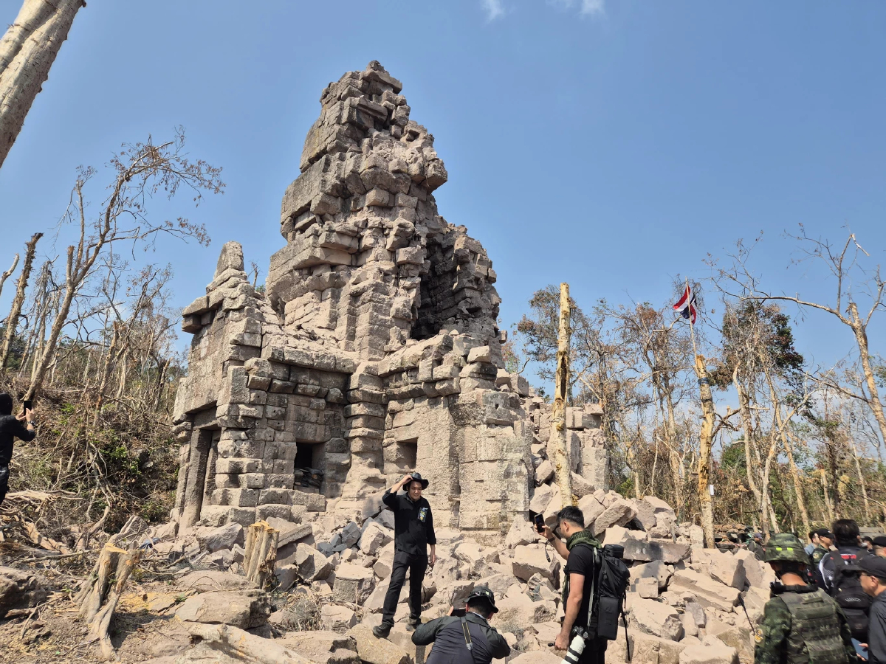

ทำความรู้จัก "ปราสาทตาควาย"
- [ปราสาทตาควาย]
ตั้งอยู่บน ทิวเขาพนมดงรัก บริเวณช่องตาควาย ในเขตบ้านไทยนิยมพัฒนา หมู่ 17 ตำบลบักได อำเภอพนมดงรัก จังหวัดสุรินทร์ และตั้งอยู่ห่างจาก
ปราสาทตาเมือนธม ประมาณ 12 กิโลเมตร
- [ลักษณะทางสถาปัตยกรรม]
เป็น ปราสาทหินศิลาแลง หลังเดียวโดดๆ
มีความสูง 12 - 15 เมตร สร้างขึ้นราวพุทธศตวรรษที่ 16-18 ในยุคเดียวกับปราสาทพนมรุ้ง จังหวัดบุรีรัมย์
- นักประวัติศาสตร์ได้สันนิษฐานจากรูปทรงของตัวปราสาทว่า น่าจะสร้างขึ้นในช่วงปลายสมัยนครวัด ต่อตอนต้นสมัยบายน ระหว่างรัชสมัยของ พระเจ้าสุริยวรมันที่ 2 ถึง พระเจ้าชัยวรมันที่ 7
- ภายใน ห้องครรภคฤหะ ประดิษฐานรูปเคารพประธาน
ได้มีการพบแท่งหินคล้าย ศิวลึงค์ ตั้งอยู่ ลักษณะคล้าย
สวายัมภูวลึงค์ หรือ สวยัมภูลึงค์ หรือ สยัมภูลึงค์ เช่นเดียวกันกับที่ ปราสาทตาเมือนธม ซึ่งเป็นเหมือนสัญลักษณ์ แทน
พระศิวะ หรือ พระอิศวร